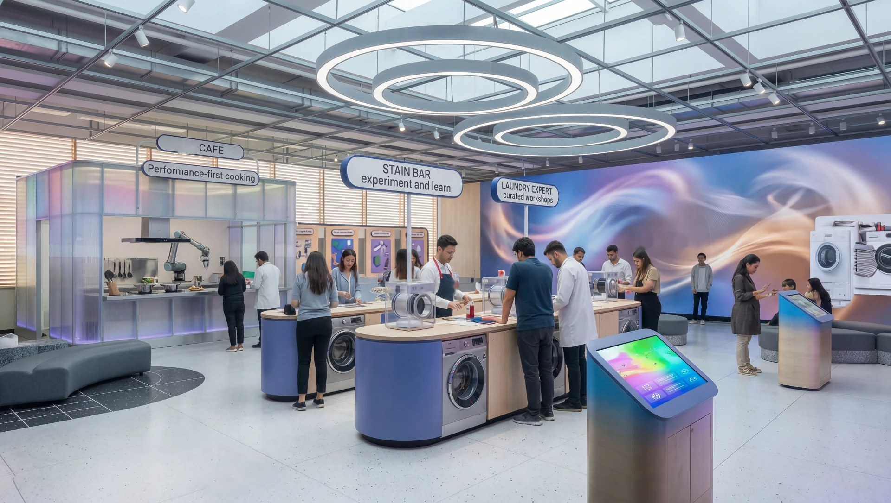
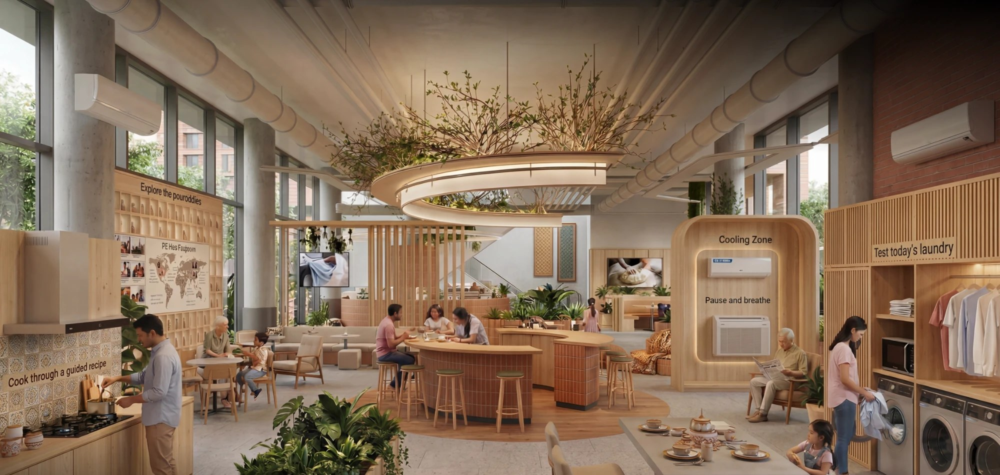
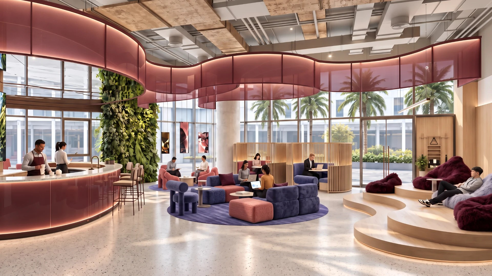
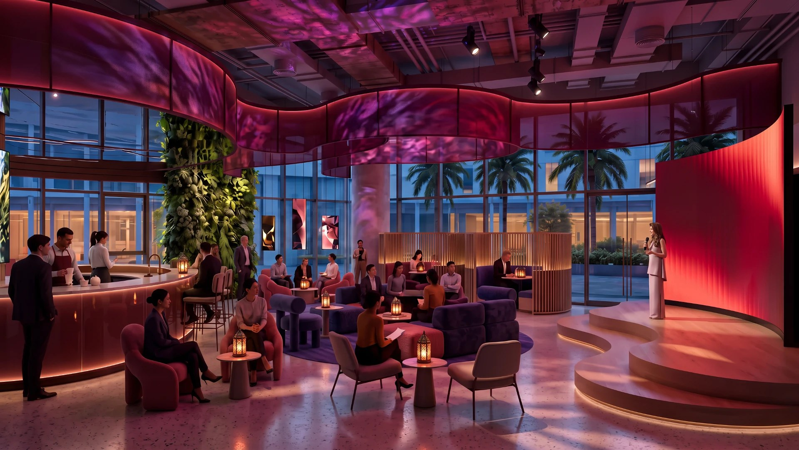
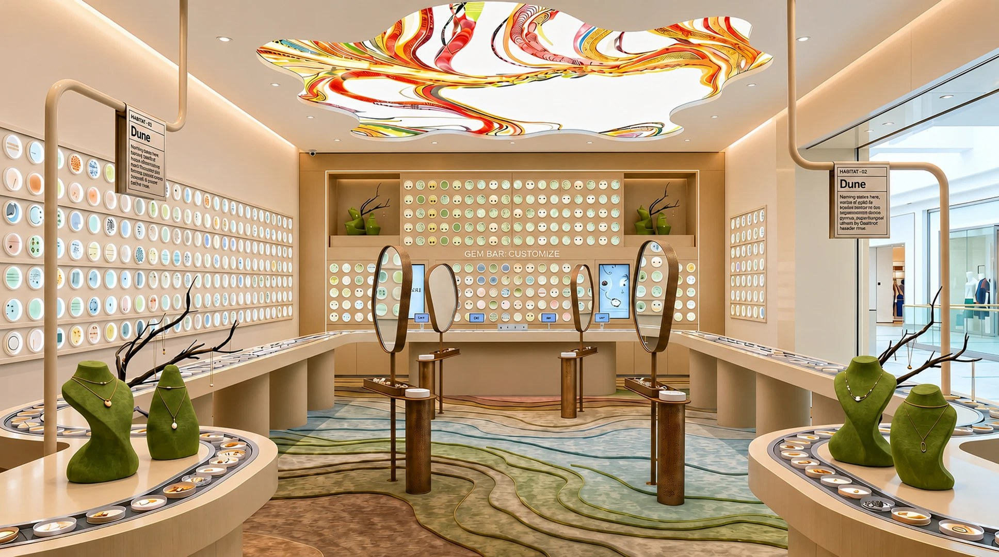
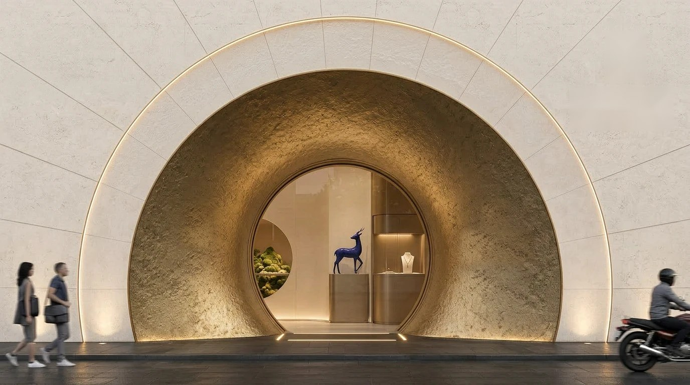
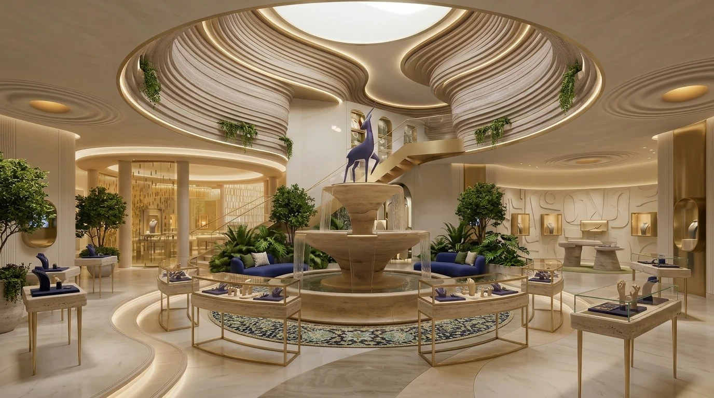

Experiments
A space for exploring how AI, VR and new tools can extend the way I design brand spaces, from fast concept imagery and mood worlds to new ways of presenting immersive experiences.
Pitch concept · AI visualisation
From showroom to lab
An appliance brand wanted to be seen as more than boxes on a showroom floor. Two explorations, visualised with AI at pitch stage.

Exploration 01 · Prove it yourself
Bring a stain, pick a cycle, see the result. Cook at a live demo. Learn at a fabric-care workshop.
Don’t tell customers what the machines can do, let them prove it.

Exploration 02 · The home, alive in action
A host invites you to explore the appliance of your choice. Cook through a guided recipe. Test today’s laundry. Pause at a coffee nook.
By the time you leave, you’ve previewed a better version of your life.
Pitch concept · AI visualisation
A space that moves with you
A digital-first bank in India wanted to change how people see it. Our answer: a space that gives you what you need, when you need it.

By day · A quiet refuge
A place to escape the pace of life: to pause, reflect and internalise.

By evening · A community hub
The space opens up, bringing people together through culture, conversation and shared experiences.
Store concept · AI visualisation
Jewellery in the wild
A jewellery store that displays its pieces the way nature displays its creatures.

Habitats · Discover, don’t browse
Each collection lives in its own habitat, with pieces presented like specimens in a natural history museum.
Wander the terrain, spot your favourite, then make it yours at the gem bar.
Pitch concept · AI visualisation
A sanctuary for adornment
A traditional Indian jewellery brand, reimagined as a sanctuary for modern-day adornment.

The threshold · Leave the street behind
A hand-beaten gold arch draws you out of the city and into a quieter world.

The sanctuary · Heritage, made modern
Water, stone and greenery slow the pace. Pieces are revealed like treasures, inviting you to linger, try and belong.